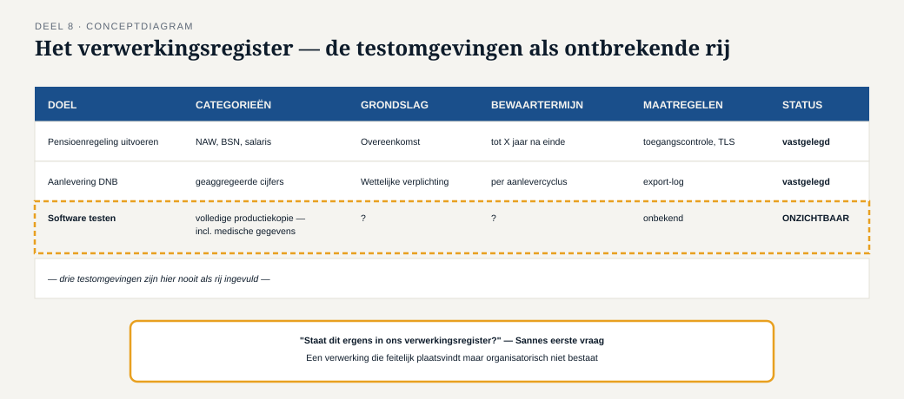
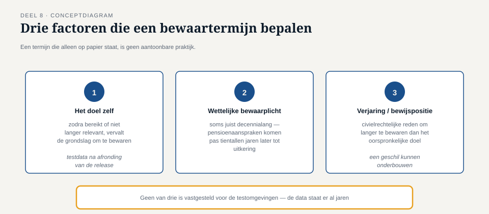
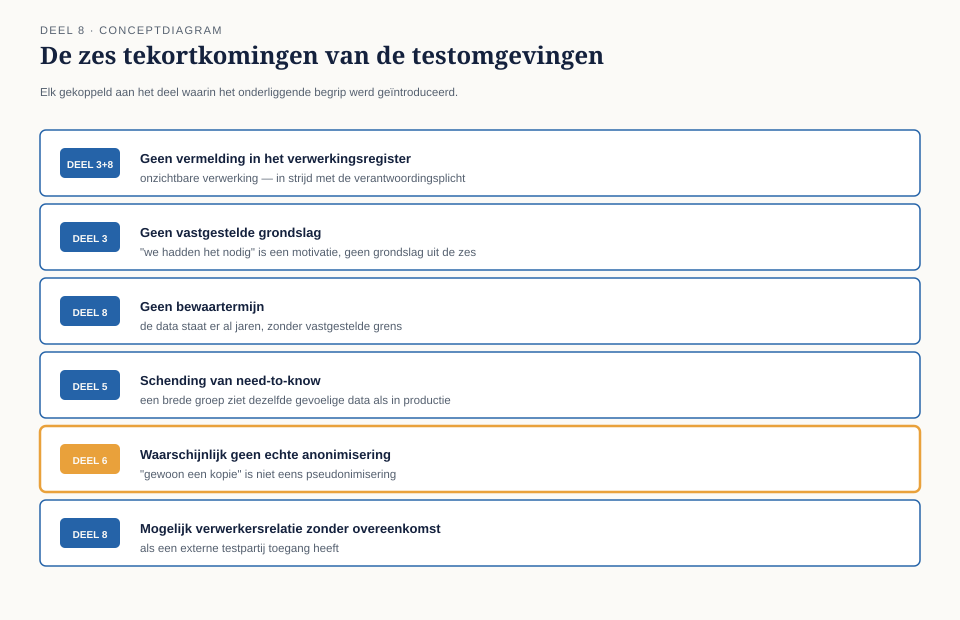

Deel 8 — Persoonsgegevens in de praktijk
Slidedeck · Ductus-cursus Informatiebeveiliging en privacy · niveau 1 · deel 8 van 10 · 24 slides
Slide 1 — Titel
Informatiebeveiliging en Privacy
Deel 8 · Niveau 1 · Fundament
Persoonsgegevens in de praktijk
Slide 2 — Terug naar het begin
Deel 1: drie testomgevingen, volledige kopie van productie.
Bewust laten liggen — tot nu.
Slide 3 — Sannes vraag
"Staat dit eigenlijk ergens in ons verwerkingsregister?"
Antwoord: nee.
Slide 4 — Het verwerkingsregister
Verplicht overzicht van elke verwerkingsactiviteit.
De praktische vertaling van de verantwoordingsplicht (deel 3).

Slide 5 — Wat erin moet
Doel · categorieën gegevens · categorieën betrokkenen
Ontvangers · doorgifte buiten EER · bewaartermijn · beveiliging
Slide 6 — Een onzichtbare verwerking
De testomgevingen bestaan feitelijk.
Organisatorisch bestaan ze niet.
Dat ís het probleem.
Slide 7 — Opdracht 8.1
Vul het verwerkingsregister in voor de testomgevingen.
Slide 8 — Bewaartermijnen: drie factoren

- Het doel zelf
- Wettelijke bewaarplicht
- Verjaring / bewijspositie
Slide 9 — Opdracht 8.3
Drie gegevenscategorieën. Welke factor bepaalt de termijn?
Slide 10 — Op papier ≠ gehandhaafd
"Maximaal twee jaar" zonder mechanisme dat dat afdwingt
= een goede intentie, geen aantoonbare praktijk.
PAUZE
Slide 11 — De verwerkersovereenkomst
Verplicht zodra Meridiaan een verwerker inschakelt.
Onderwerp, duur, aard, doel, beveiliging, subverwerkers,
rechten van betrokkenen, einde van de overeenkomst.
(volledig uitgewerkt in deel 18, niveau 2)
Slide 12 — Opdracht 8.2
Welke van de zes grondslagen dekt de testomgevingen?
Slide 13 — Loop ze langs
Toestemming? Overeenkomst? Wettelijke plicht?
Vitaal belang? Algemeen belang? Gerechtvaardigd belang?
Slide 14 — Het meest kansrijke — en waarom het toch faalt
Gerechtvaardigd belang: bedrijfsbelang bij goed testen.
Maar de noodzaak-stap faalt zodra een minder ingrijpend
alternatief bestaat: synthetische data.
Geen houdbare grondslag.
Slide 15 — De testomgevingen volledig ontleed

Zes tekortkomingen — elk uit een eerder deel.
Slide 16 — De zes op een rij
- Niet in het register (deel 3, dit deel)
- Geen grondslag (deel 3)
- Geen bewaartermijn (dit deel)
- Need-to-know geschonden (deel 5)
- Geen echte anonimisering (deel 6)
- Mogelijk geen verwerkersovereenkomst (dit deel)
Slide 17 — Elk eerder deel was hiervoor nodig
De hele cursus tot nu toe komt hier samen.
Slide 18 — De voor de hand liggende oplossing
"Verwijder de testomgevingen gewoon."
Lost het acute risico op. Niet het onderliggende probleem.
Slide 19 — Opdracht 8.4
Waarom is "gewoon verwijderen" onvolledig?
Wat gebeurt er als dit de enige maatregel blijft?
Slide 20 — De structurele oplossing
Synthetische of écht geanonimiseerde testdata.
Realistisch genoeg om te testen.
Geen enkele herleidbaarheid meer.
Slide 21 — Merels drieslag, opnieuw
- Direct: toegang beperken
- Op korte termijn: registreren, grondslag/termijn vaststellen
- Structureel: synthetische testdata als proces
Slide 22 — Waarom Merel én Sanne nodig waren
Alleen beveiliging: "technisch prima" — mist de rechtmatigheidsvraag.
Alleen privacy: signaleert het probleem — mist het haalbare alternatief.
Samen: volledige diagnose én uitvoerbare oplossing.
Slide 23 — Opdracht 8.5
Waarom had geen van beiden dit alleen kunnen oplossen?
Koppel terug aan deel 4.
Slide 24 — Vooruitblik
Deel 9: als het misgaat —
en de 340 ongelezen berichten in de beveiligingsmailbox